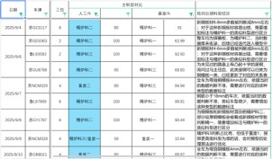
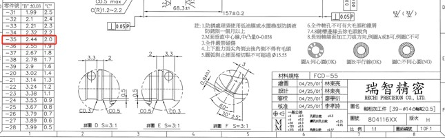
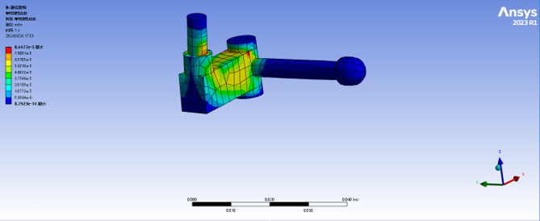
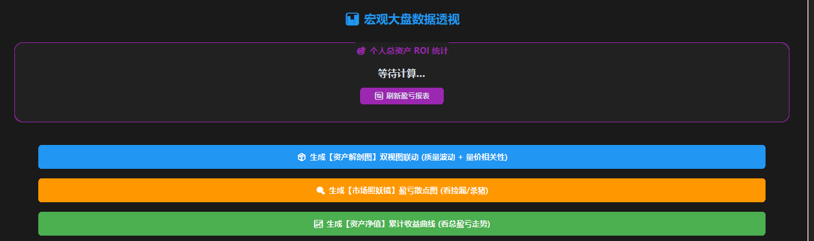
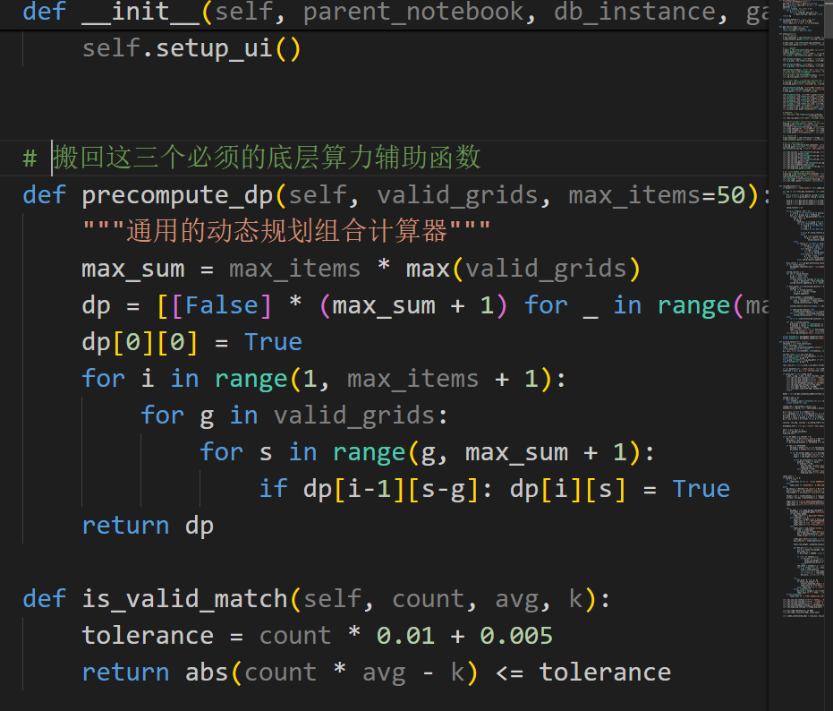

I am a Mechanical Engineering student with a deep fascination for the intersection of physical systems and data-driven automation. My journey spans from vehicle dynamics at CQU to precision manufacturing at TCL RECHI, and industrial AI data engineering at CISDI.




Developed a simulation system integrating dynamic risk-adjustment indicators and historical ROI analysis to optimize bidding strategies.

Built a system matching database entries with physical item attributes using SQLite and statistical regression for valuation models.
Translating complex technical data into actionable insights for diverse stakeholders.
Finding non-traditional solutions (e.g., dynamic programming) for technical optimization.
Python (Pandas/Matplotlib), SQLite, OCR/OpenCV, and CAD software.